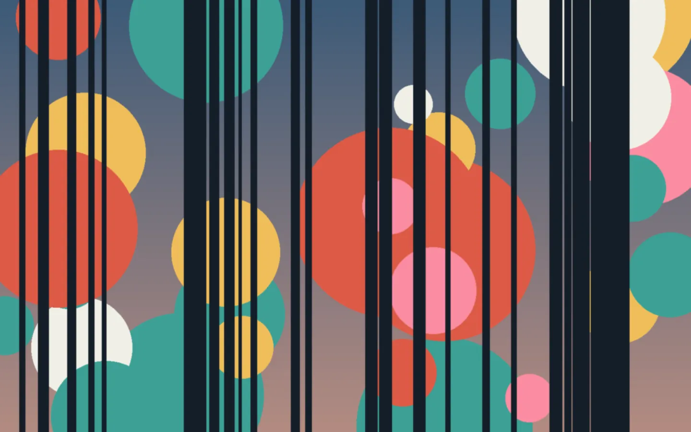

Vidro sobre cor
O painel desfoca o que passa atrás dele. A tinta escura garante a leitura; a aresta clara dá a sensação de material.
Ver a variante claraVariante clara
Tinta clara e texto escuro. Textos longos pedem tinta forte (≥ .78); textos curtos aguentam .3.
Ação